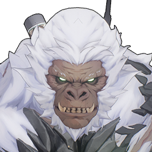

Feilian Beringal

Element: Aero
The mimic giant ape dwelling in the Giant Banyan, protecting the territory of the ape group, shows strong hostility to invaders.
To avoid a head-on encounter with the Feilian Beringal, the Midnight Rangers and the Huaxu Academy once launched a special operation, putting a positioning bracelet on the Feilian Beringal to observe its movements in the forest.